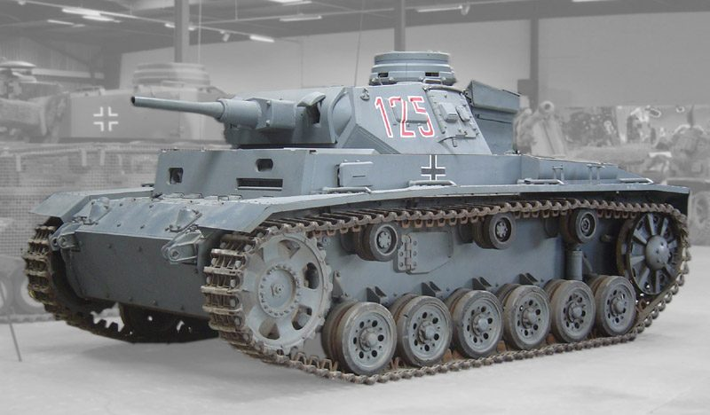
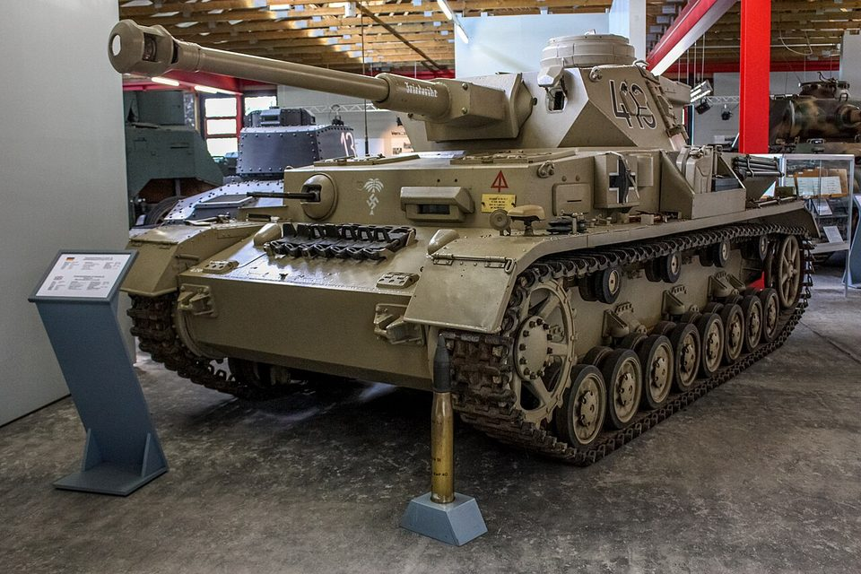
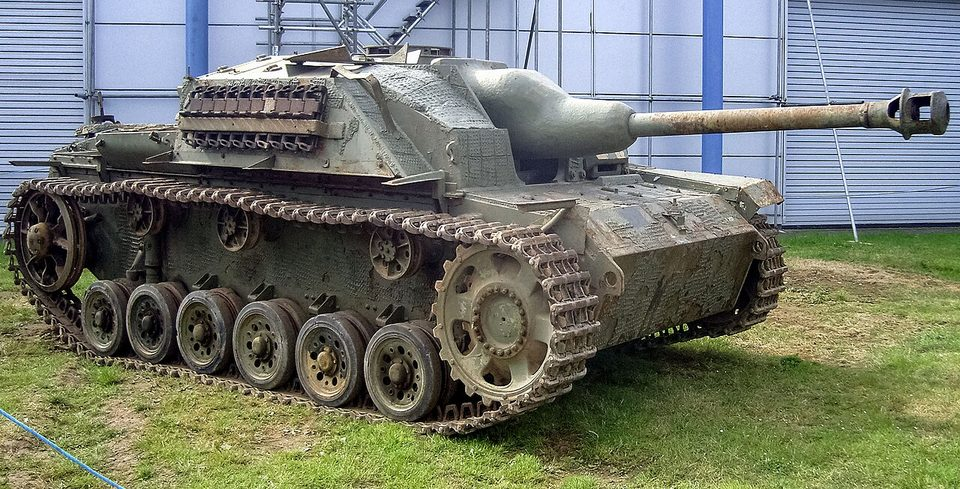
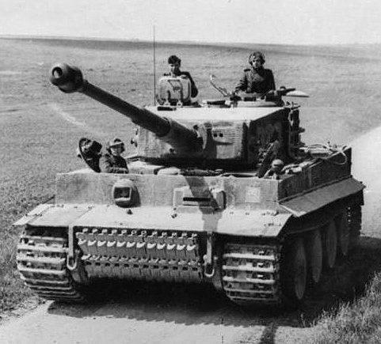
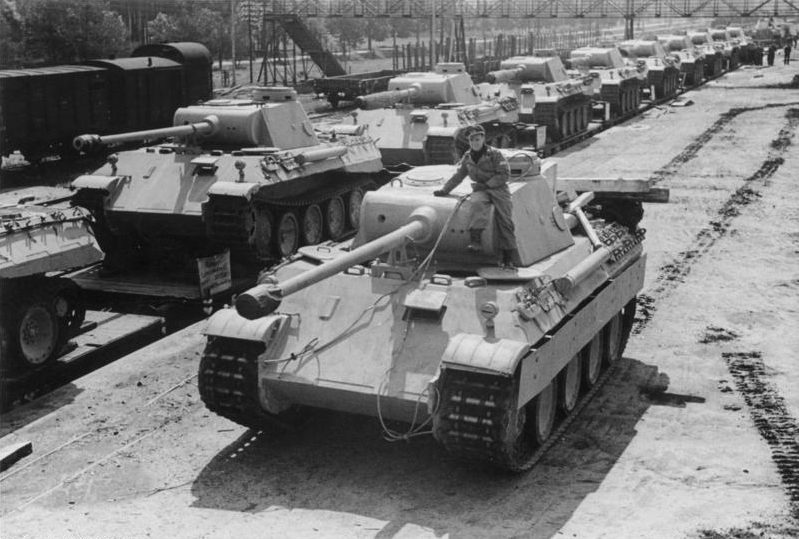
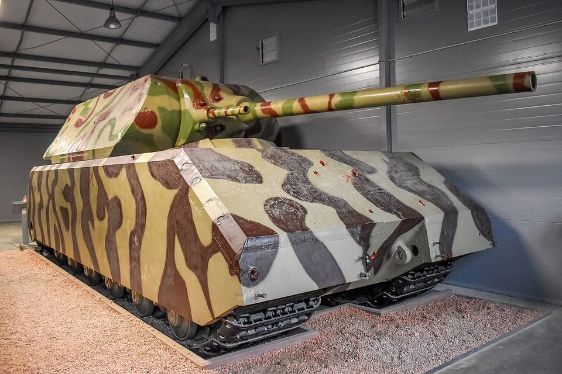
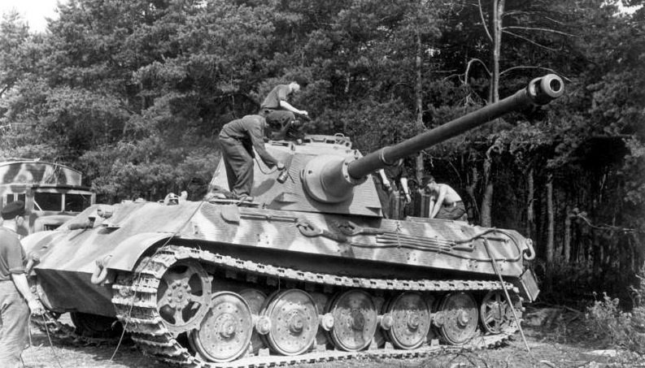
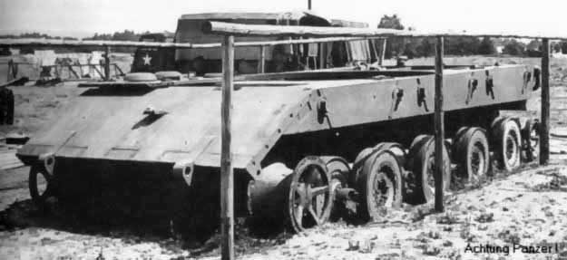

Todos los tanques › Por país › Alemania
Tanques de Alemania
Del A7V de 1918 a los Leopard: Alemania marcó la doctrina acorazada de la Segunda Guerra Mundial y volvió a fabricar carros propios en los años sesenta.
Primera Guerra Mundial
1916–1918 · 1 fichaEntreguerras
1919–1939 · 1 fichaSegunda Guerra Mundial
1939–1945 · 8 fichas-

Alemania · 1939Panzer III
Carro medio
-

Alemania · 1939Panzer IV
Carro medio
-

Alemania · 1940StuG III
Cañón de asalto
-

Alemania · 1942Tiger I
Carro pesado
-

Alemania · 1943Panther
Carro medio
-

Alemania · 1944Panzer VIII Maus
Prototipo de carro superpesado
-

Alemania · 1944Tiger II
Carro pesado
-

Alemania · 1945Panzerkampfwagen E-100
Prototipo de carro superpesado